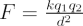

Coulomb’s law allows us to explain the magnitude and sign of the electrostatic force between any two charged particles.
If two charged particles of charge q1 and q2 are separated by a distance d, then the force F between them is

where q1 and q2 are the charge of the two particles (in Coulombs), and k is the Coulomb constant – for charged particles in air, the value of the Coulomb constant is 8.988 × 109 N m2 C-2.
The direction of the force is attractive between opposite charges and repulsive between like charges and directed radially between the particles.